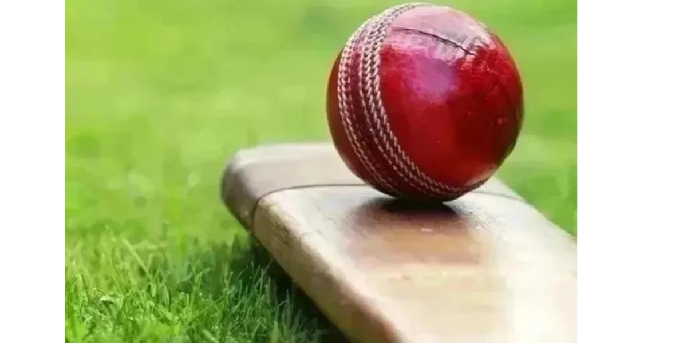

Football
Football is a beautiful game and we should presrve it.

Cricket
It should not be treated as Amens game but a womens game too.

Tennis
The great part about tennis is you can’t run out the clock…. As long as you are still playing, you have a chance.
Football
Football is a game that millions of people around the world play and love. It can be called a universal game because every small and big nation plays it. Moreover, it’s a great relaxer, stress reliever, teacher of discipline and teamwork. Apart from that, it keeps the body and mind fit and healthy. It’s a team game that makes it a more enjoyable game as it teaches people the importance of sportsmanship. Leadership, and unity.